Total packages with multiple versions coalesced so you can see new package growth
These are annual reviews of the activities of OCaml Labs – an initiative within the Cambridge Computer Laboratory started by Anil Madhavapeddy in 2011 to promote research, growth and collaboration within the wider OCaml community. We contribute to management of the day-to-day OCaml maintenance load, and align research agendas with real-world projects to help progress the language and make it available and applicable to a larger audience. Together with INRIA and our other partners, our goal is to freely release and integrate all work upstream, allowing all prospective users access to the efficient, expressive language of OCaml.
The OCaml Labs initiative within the Cambridge Computer Laboratory is now just over two years old, and it is time for an update about our activities since the last update at the end of 2013 and 2012.
The theme of our group was not to be pure research, but rather a hybrid group that takes on some of the load of day-to-day OCaml maintenance from INRIA, as well as help grow the wider community and meet our own research agendas around topics such as unikernels. To this end, all of our projects have been highly collaborative, often involving colleagues from OCamlPro, INRIA, Jane Street, Lexifi and Citrix.
This post covers our progress in tooling, the compiler and language, community efforts, research projects and concludes with our priorities for 2015.
At the start of 2014, we had just helped to release OPAM 1.1.1 with our colleagues at OCamlPro, and serious OCaml users had just started moving over to using it.
Our overall goal at OCaml Labs is to deliver a modular set of of development tools around OCaml that we dub the OCaml Platform. The remainder of 2014 was thus spent polishing this nascent OPAM release into a solid base (both as a command-line tool and as a library) that we could use as the basis for documentation, testing and build infrastructure, all the while making sure that bigger OCaml projects continued to migrate over to it. Things have been busy; here are the highlights of this effort.
The central OPAM repository that contains the package descriptions has grown tremendously in 2014, with over 280 contributors committing almost 10000 changesets across 3800 pull requests on GitHub. The front line of incoming testing has been continuous integration by the wonderful Travis CI, who also granted us access to their experimental MacOS X build pool. The OPAM package team also to expanded to give David Sheets, Jeremy Yallop, Peter Zotov and Damien Doligez commit rights, and they have all been busily triaging new packages as they come in.
Several large projects such as Xapi, Ocsigen and our own MirageOS switched over to using OPAM for day-to-day development, as well as prolific individual developers such as Daniel Buenzli and Markus Mottl. Jane Street continued to send regular monthly updates of their Core/Async suite, and releases appeared from the Facebook open-source team as well (who develop Hack, Flow and Pfff in OCaml).
Number of unique contributors to the central OPAM package repository
Total number of unique packages (including multiple versions of the same package)
Total packages with multiple versions coalesced so you can see new package growth
We used feedback from the users to smooth away many of the rough edges, with:
opam source. This handles any supported OPAM archive, including Git, Mercurial or Darcs remotes.These changes were all incorporated into the OPAM 1.2, along with backwards compatibility shims to keep the old 1.1 metadata format working until the migration is complete. The 1.2.x series has been a solid and usable development manager, and last week’s release of OPAM 1.2.1 has further polished the core scripting engine.
One of the more notable developments during 2014 was the adoption of OPAM further up the ecosystem by the Coq theorem prover. This broadening of the community prompted us to create an official OPAM blog to give us a central place for new and tips, and we’ve had posts about XenServer developments, the Merlin IDE tool and the modern UTop interactive REPL. If you are using OPAM in an interesting or production capacity, please do get in touch so that we can work with you to write about it for the wider community.
The goal of the blog is also to start bringing together the various components that form the OCaml Platform. These are designed to be modular tools (so that you can pick and choose which ones are necessary for your particular use of OCaml). There are more details available from the OCaml Workshop presentation at ICFP 2014 (abstract, slides, video).
OPAM has also been adopted now by several big universities (including us at Cambridge!) for undergraduate and graduate Computer Science courses. The demands increased for an out-of-the-box solution that makes it as easy possible for new users to get started with minimum hassle. We created a dedicated teaching list to aid collaboration, and a list of teaching resources on ocaml.org and supported several initiatives in collaboration with Louis Gesbert at OCamlPro, as usual with OPAM development).
The easiest way to make things “just work” are via regular binary builds of the latest releases of OCaml and OPAM on Debian, Ubuntu, CentOS and Fedora, via Ubuntu PPAs and the OpenSUSE Build Service repositories. Our industrial collaborators from Citrix, Jon Ludlam and Dave Scott began an upstreaming initiative to Fedora and sponsored the creation of a CentOS SIG to ensure that binary packages remain up-to-date. We also contribute to the hardworking packagers on MacOS X, Debian, FreeBSD, NetBSD and OpenBSD where possible as well to ensure that binary builds are well rounded out. Richard Mortier also assembled Vagrant boxes that contain OCaml, for use with VirtualBox.
Louis cooks us dinner in Nice at our OPAM developers
Within OPAM itself, we applied polish to the handling of external dependencies to automate checking that the system libraries required by OPAM are present. Two emerging tools that should help further in 2015 are the opam-user-setup and OPAM-in-a-box plugins that automate first-time configuration. These last two are primarily developed at OCamlPro, with design input and support from OCaml Labs.
We do have a lot of work left to do with making the new user experience really seamless, and help is very welcome from anyone who is interested. It often helps to get the perspective of a newcomer to find out where the stumbling blocks are, and we value any such advice. Just mail with your thoughts, or create an issue on how we can improve. A particularly good example of such an initiative was started by Jordan Walke, who prototyped CommonML with a NodeJS-style development workflow, and wrote up his design document for the mailing list. (Your questions or ideas do not need to be as well developed as Jordan’s prototype!)
 The public Travis CI testing does come with some limitations, since it only checks that the latest package sets install, but not if any transitive dependencies fail due to interface changes. It also doesn’t test all the optional dependency combinations due to the 50 minute time limit.
The public Travis CI testing does come with some limitations, since it only checks that the latest package sets install, but not if any transitive dependencies fail due to interface changes. It also doesn’t test all the optional dependency combinations due to the 50 minute time limit.
We expanded the OPAM repository testing in several ways to get around this:
Individual Repositories: Thomas Gazagnaire built centralised Travis scripts that can be used on any OCaml GitHub repository to easily test code before it is released into OPAM. These scripts are sourced from a central repository and support external, optional and reverse dependency checking across multiple revisions of the compiler. For instance, it just needs one file to test all the supported permutations of the CoHTTP library.
Bulk Builds: Damien Doligez and I independently started doing large-scale bulk builds of the repository to ensure that a single snapshot of the package repository can automatically build as many packages as possible. My implementation used the Docker container manager to spawn off 1000s of package builds in parallel and commit the results into a filesystem This required building a Dockerfile eDSL, and the results are now online at https://opam.ocaml.org/builds.
OCamlot: An ongoing piece of infrastructure work is to take the bulk build logs (which are around 7GB per daily run), and to store and render them using our Irmin Git store. Expect to see more around this soon; it has the awesome feature of letting any developer clone the build logs for their project locally, to make triage of foreign operating systems as simple as possible.
This ability to do unattended builds of the package repository has also improved the decision making process within the core compiler team. Since we now have a large (3000+ package) corpus of OCaml code, it became a regular occurrence in the 4.02 development cycle to “ask OPAM” whether a particular feature or new syntax would break any existing code. This in turn provides an incentive for commercial users to provide representative samples of their code; for instance, the Jane Street Core releases in OPAM (with their very modular style) act as an open-source canary without needing access to any closed source code.
One good example in 2014 was the decoupling of the Camlp4 macro preprocessor from the main OCaml distribution. Since Camlp4 has been used for over a decade and there are some very commonly used syntax extensions such as type_conv, a simple removal would break a lot of packages. We used OPAM to perform a gradual movement that most users hopefully never noticed by the time OCaml 4.02 was released. First, we added a dummy package in OPAM for earlier versions of the compiler that had Camlp4 built-in, and then used the OPAM constraint engine to compile it as an external tool for the newer compiler revisions. Then we just had to triage the bulk build logs to find build failures from packages that were missing a Camlp4 dependency, and add them to the package metadata.
An interesting comment from Vincent Hanquez about OPAM is that “OCaml’s OPAM is a post-GitHub design”. This is very true, as much of the workflow for pinning git:// URLs emerged out of being early adopters of GitHub for hosting the MirageOS. OCaml Labs supported two pieces of infrastructure integration around GitHub in 2014:
OPAM has a compiler switch feature that lets you run simultaneous OCaml installations and swap between them easily. I used my GitHub API bindings to regularly convert every GitHub pull request into a custom compiler switch. This lets users reporting bugs try out a patched compiler almost immediately upon a fix becoming available.
The motivation behind this feature was our collaborator Gabriel Scherer’s experiment to enable patch review of OCaml on GitHub, alongside the venerable Mantis bug tracker. We supported this via adding Travis CI support to the main compiler, and also helped to migrate a number of support libraries to GitHub, such as camlp4. These can all be found on the ocaml organisation on GitHub.
Leo White, David Sheets, Amir Chaudhry and Thomas Gazagnaire led the charge to build a modern documentation generator for OCaml, and published an alpha version of codoc 0.2.0 after a lot of work throughout 2014. In the 2014 OCaml workshop presentation (abstract, slides, video), we mentioned the “module wall” for documentation and this attempts to fix it. To try it out, simply follow the directions in the README on that repository, or browse some samples of the current, default output of the tool. Please do bear in mind codoc and its constituent libraries are still under heavy development and are not feature complete, but we’re gathering feedback from early adopters.
codoc’s aim is to provide a widely useful set of tools for generating OCaml documentation. In particular, we are striving to:
codocWe haven’t yet achieved all of these at all levels of our tool stack but are getting close, and the patches are all under discussion for integration into the mainstream OCaml compiler. codoc 0.2.0 is usable today (if a little rough in some areas like default CSS), and there is a blog post that outlines the architecture of the new system to make it easier to understand the design decisions that went into it.
As the amount of infrastructure built around the ocaml.org domain grows (e.g. mailing lists, file hosting, bulk building), it is important to establish a governance framework to ensure that it is being used as best needed by the wider OCaml community.
Amir Chaudhry took a good look at how other language communities organise themself, and began putting together a succinct governance framework to capture how the community around ocaml.org operates, and how to quickly resolve any conflicts that may arise in the future. He took care to ensure it had a well-defined scope, is simple and self-contained, and (crucially) documents the current reality. The result of this work is circulating privately through all the existing volunteers for a first round of feedback, and will go live in the next few months as a living document that explains how our community operates.
One consequence of OCaml’s age (close to twenty years old now) is that the tools built around the compiler have evolved fairly independently. While OPAM now handles the high-level package management, there is quite a complex ecosystem of other components that are complex for new users to get to grips with: OASIS, ocamlfind, ocamlbuild, and Merlin to name a few. Each of these components (while individually stable) have their own metadata and namespace formats, further compounding the lack of cohesion of the tools.
Thomas Gazagnaire and Daniel Buenzli embarked on an effort to build an eDSL that unifies OCaml package descriptions, with the short-term aim of generating the support files required by the various support tools, and the long-term goal of being the integration point for the build, test and documentation generation lifecycle of an OCaml/OPAM package. This prototype, dubbed Assemblage has gone through several iterations and design discussions over the summer of 2014. Daniel has since been splitting out portions of it into the Bos OS interaction library.
Assemblage is not released officially yet, but we are committed to resuming work on it this summer when Daniel visits again, with the intention of unifying much of our workflow through this tool. If you are interested in build and packaging systems, now is the time to make your opinion known!
We also spent time in 2014 working on the core OCaml language and compiler, with our work primarily led by Jeremy Yallop and Leo White. These efforts were not looking to make any radical changes in the core language; instead, we generally opted for evolutionary changes that either polish rough edges in the language (such as open type and handler cases), or new features that fit into the ML style of building programs.
The OCaml 4.02 series was primarily developed and released in 2014. The ChangeLog generated much user excitement, and we were also pleased to have contributed several language improvements.
OCaml’s try and match constructs are good at dealing with exceptions and values respectively, but neither constructs can handle both values and exceptions. Jeremy Yallop investigated how to handle success more elegantly, and an elegant unified syntax emerged. A simple example is that of a stream iterator that uses exceptions for control flow:
let rec iter_stream f s =
match (try Some (MyStream.get s) with End_of_stream -> None) with
| None -> ()
| Some (x, s') -> f x; iter_stream f s'This code is not only verbose, but it also has to allocate an option value to ensure that the iter_stream calls remains tail recursive. The new syntax in OCaml 4.02 allows the above to be rewritten succinctly:
let rec iter_stream f s =
match MyStream.get s with
| (x, s') -> f x; iter_stream f s'
| exception End_of_stream -> ()Read more about the background of this feature in Jeremy’s blog post, the associated discussion in the upstream Mantis bug, and the final manual page in the OCaml 4.02 release. For an example of its use in a real library, see the Jane Street usage in the s-expression handling library (which they use widely to reify arbitrary OCaml values and exceptions).
A long-standing trick to build universal containers in OCaml has been to encode them using the exception exn type. There is a similar concept of a universal type in Standard ML, and they were described in the “Open Data Types and Open Functions” paper by Andres Löh and Ralf Hinze in 2006.
Leo White designed, implemented and upstreamed support for extensible variant types in OCaml 4.02. Extensible variant types are variant types that can be extended with new variant constructors. They can be defined as follows:
type attr = ..
type attr += Str of string
type attr +=
| Int of int
| Float of floatPattern matching on an extensible variant type requires a default case to handle unknown variant constructors, just as is required for pattern matching on exceptions (extensible types use the exception memory representation at runtime).
With this feature added, the OCaml exn type simply becomes a special case of open extensible types. Exception constructors can be declared using the type extension syntax:
type exn += Exc of intYou can read more about the discussion behind open extensible types in the upstream Mantis bug. If you’d like to see another example of their use, they have been adopted by the latest releases of the Jane Street Core libraries in the Type_equal module.
A common criticism of OCaml is its lack of support for ad-hoc polymorphism. The classic example of this is OCaml’s separate addition operators for integers (+) and floating-point numbers (+.). Another example is the need for type-specific printing functions (print_int, print_string, etc.) rather than a single print function which works across multiple types.
Taking inspiration from Scala’s implicits and Modular Type Classes by Dreyer et al., Leo White designed a system for ad-hoc polymorphism in OCaml based on using modules as type-directed implicit parameters. The design not only supports implicit modules, but also implicit functors (that is, modules parameterised by other module types) to permit the expression of generic modular implicits in exactly the same way that functors are used to build abstract data structures.
Frederic Bour joined us as a summer intern and dove straight into the implementation, resulting in an online demo and ML Workshop presentation (abstract, video and paper). Another innovation in how we’ve been trialling this feature is the use of Andy Ray’s IOCamlJS to publish an interactive, online notebook that is fully hosted in the browser. You can follow the examples of modular implicits online, or try them out on your own computer via an OPAM switch:
opam switch 4.02.0+modular-implicits
eval `opam config env`
opam install utop
utopSome of the early feedback on modular implicits from industrial users was interesting. Jane Street commented that although this would be a big usability leap, it would be dangerous to lose control over exactly what goes into the implicit environment (i.e. the programmer should always know what (a + b) represents by locally reasoning about the code). The current design thus follows the ML discipline of maintaining explicit control over the namespace, with any ambiguities in resolving an implicit module type resulting in a type error.
In addition to ad-hoc polymorphism, support for parallel execution on multicore CPUs is undoubtedly the most common feature request for OCaml. This has been high on our list after improving tooling support, and Stephen Dolan and Leo White made solid progress in 2014 on the core runtime plumbing required.
Stephen initially added thread-local support to the OCaml compiler. This design avoided the need to make the entire OCaml runtime preemptive (and thus a huge patch) by allocating thread-local state per core.
We are now deep into the design and implementation of the programming abstractions built over these low-level primitives. One exciting aspect of our implementation is much of the scheduling logic for multicore OCaml can be written in (single-threaded) OCaml, making the design very flexible with respect to heterogenous hardware and variable IPC performance.
To get feedback on the overall design of multicore OCaml, we presented at OCaml 2014 (slides, video and abstract), and Stephen visited INRIA to consult with the development team and Arthur Chargueraud (the author of PASL). Towards the end of the year, KC Sivaramakrishnan finished his PhD studies at Purdue and joined our OCaml Labs group. He is the author of MultiMlton, and is now driving the completion of the OCaml multicore work along with Stephen Dolan, Leo White and Mark Shinwell. Stay tuned for updates from us when there is more to show later this year!
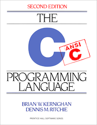 The Ctypes library started as an experiment with GADTs by Jeremy Yallop, and has since ballooned in a robust, comprehensive library for safely interacting with the OCaml foreign function interface. The first release came out in time to be included in Real World OCaml in lieu of the low-level FFI (which I was not particularly enamoured with having to explain in a tight page limit).
Throughout 2014, Jeremy expanded support for a number of features requested by users (both industrial and academic) who adopted the library in preference to manually writing C code to interface with the runtime, and issued several updated releases.
The first release of Ctypes required the use of libffi to dynamically load shared libraries and dynamically construct function call stack frames whenever a foreign function is called. While this works for simple libraries, it cannot cover all usecases, since interfacing with C demands an understanding of struct memory layout, C preprocessor macros, and other platform-dependent quirks which are more easily dealt with by invoking a C compiler. Finally, the performance of a libffi-based API will necessarily be slower than writing direct C stub code.
While many other language FFIs provide separate libraries for dynamic and static FFI libraries, we decided to have a go at building a modular version of Ctypes that could handle both cases from a single description of the foreign function interface. The result (dubbed “Cmeleon”) remained surprisingly succinct and usable, and now covers almost every use of the OCaml foreign function interface. We submitted a paper to ICFP 2015 dubbed “A modular foreign function interface” that describes it in detail. Here is a highlight of how simple a generic binding looks:
module Bindings(F : FOREIGN) = struct
open F
let gettimeofday = foreign "gettimeofday"
(ptr timeval @-> ptr timezone @-> returning int)
endThe FOREIGN module type completely abstracts the details of whether or not dynamic or static binding is used, and handles C complexities such as computing the struct layout on the local machine architecture.
The other nice result from functorising the foreign function interface emerged when we tried to invert the FFI and serve a C interface from OCaml code (for example, by compiling the OCaml code as a shared library). This would let us begin swapping out C libraries that we don’t trust with safer equivalents written in OCaml.
You can see an example of how inverted stubs work via a simple C XML parsing exposed from the Xmlm library. We can define a C struct by:
(* Define a struct of callbacks (C function pointers) *)
let handlers : [`handlers] structure typ = structure "handlers"
let (--) s f = field handlers s (funptr f)
let on_data = "on_data" -- (string @-> returning void)
let on_start_tag = "on_start_tag" -- (string @-> string @-> returning void)
let on_end_tag = "on_end_tag" -- (void @-> returning void)
let on_dtd = "on_dtd" -- (string @-> returning void)
let on_error = "on_error" -- (int @-> int @-> string @-> returning void)
let () = seal handlersand then expose this via C functions:
module Stubs(I : Cstubs_inverted.INTERNAL) = struct
(* Expose the type 'struct handlers' to C. *)
let () = I.structure handlers
(* We expose just a single function to C. The first argument is a (pointer
to a) struct of callbacks, and the second argument is a string
representing a filename to parse. *)
let () = I.internal "parse_xml"
(ptr handlers @-> string @-> returning void) parse
endYou can find the full source code to these snippets on the ocaml-ctypes-inverted-stubs-example repository on GitHub.
We’ll be exploring this aspect of Ctypes further in 2015 for SSL/TLS with David Kaloper and Hannes Mehnert, and Microsoft Research has generously funded a PhD studentship to facilitate the work.
Ctypes benefited enormously from several external contributions from the OCaml community. From a portability perspective, A. Hauptmann contributed Windows support, and Thomas Leonard added Xen support to allow Ctypes bindings to work with MirageOS unikernels (which opens up the intriguing possibility of accessing shared libraries across virtual machine boundaries in the future). C language support was fleshed out by Edwin Torok contributing typedef support, Ramkumar Ramachandra adding C99 bools and Peter Zotov integrating native strings.
The winner of “most enthusiastic use of OCaml Labs code” goes to Thomas Braibant of Cryptosense, who used every feature of the Ctypes library (consider multi-threaded, inverted, staged and marshalled bindings) in their effort to hack the hackers. David Sheets comes a close second with his implementation of the FUSE binary protocol, parameterised by version quirks.
If you’re using Ctypes, we would love to hear about your particular use. A search on GitHub and OPAM reveals over 20 projects using it already, including industrial use at Cryptosense and Jane Street, and ports to Windows, *BSD, MacOS X and even iPhone and Android. There’s a getting started guide, and a mailing list available.
In addition to the online community building, we also participated in a number of conferences and face-to-face events to promote education about functional programming.
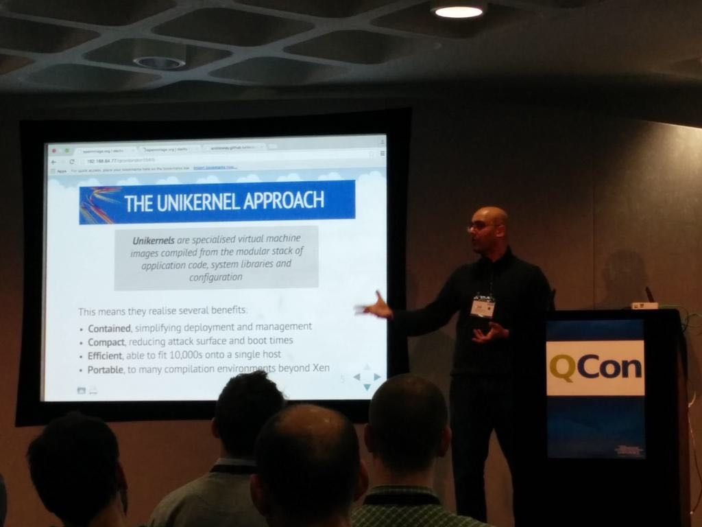 There has been a huge growth in the number of quality conferences in recent years, making it tough to choose which ones to attend. ICFP is the academic meeting point that predates most of them, and we participated extensively in 2014 via talks, tutorials and a keynote at the Haskell Symposium.
I also served on the program committee and industrial relations chair and took over as the steering committee chair of CUFP. Jeremy Yallop, Thomas Gazagnaire and Leo White all served program committees on workshops, with Jeremy also chairing this year’s ML Workshop.
Outside of academic conferences, we participated in a number of non-academic conferences such as QCon, OSCON, CCC, New Directions in OS, FunctionalConf, FPX and FOSDEM. The vast majority of these talks were about the MirageOS, and slides can be found at decks.openmirage.org.
Yaron Minsky and I have run OCaml tutorials for ICFP for a few years, and we finally hung up our boots in favour of a new crowd.
Jeremy Yallop and Leo White stepped up to the mark with their ICFP/CUFP 2014 Introduction to OCaml tutorial, which had the additional twist of being taught entirely in a web browser by virtue of using the js_of_ocaml and IOCamlJS. They decided that a good practical target was the popular 2048 game that has wasted many programmer hours here at OCaml Labs. They hacked on it over the summertime, assisted by our visitor Daniel Buenzli who also released useful libraries such as Vg, React, Useri, and Gg.
The end result is satisfyingly playable online, with the source code available at ocamllabs/2048-tutorial.
Thomas Gazagnaire got invited to Bangalore for Functional Conf later in the year, and he extended the interactive tutorial notebook and also ran an OCaml tutorial to a packed room. We were very happy to support the first functional programming conference in India, and hope to see many more such events spring up! Amir Chaudhry then went to Belgium to FOSDEM 2015 where he showed off the 2048 game running as an ARM unikernel to a crowd of attendees at the Xen booth.
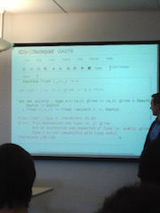 Jeremy Yallop and Leo White (with assistance from Alan Mycroft and myself) also led the design of a new graduate course on Advanced Functional Programming at the Computer Laboratory. This ran in the Lent Term and was over-subscribed by three times the number who pre-registered (due to a number of PhD students and our collaborators from Citrix also attending).
The course materials are freely available online and cover the theory behind functional programming, and then move onto type inference, abstraction and parametricity, GADTs, rows, monads, and staging. We will be running this again in future years, and the lecture materials are already proving useful to answer mailing list questions.
We also had the pleasure of mentoring up-and-coming functional programmers via several outreach programs, both face-to-face and remote.
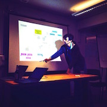 We started the Cambridge Compiler Hacking sessions in a small way towards the end of 2013 in order to provide a local, friendly place to assist people who wanted to dip their toes into the unnecessarily mysterious world of programming language hacking. The plan was simple: provide drinks, pizza, network and a bug list of varying difficulty for attendees to choose from and work on for the evening, with mentoring from the experienced OCaml contributors.
We continued this bi-monthly tradition in 2014, with a regular attendance of 15-30 people, and even cross-pollinated communities with our local F# and Haskell colleagues. We rotated locations from the Cambridge Computer Laboratory to Citrix, Makespace, and the new Cambridge Postdoc Centre. We posted some highlights from sessions towards the start of the year, and are very happy with how it’s going. There has even been uptake of the bug list across the water in France, thanks to Gabriel Scherer.
In 2015, we’d like to branch out further and host some sessions in London. If you have a suggestion for a venue or theme, please get in touch!
There has been a laudable rise in summer programs designed to encourage diversity in our community, and we of course leap at the opportunity to participate in these when we find them.
Our own students also had the chance to participate in such workshops to get out of Cambridge in the summer! Heidi Howard liveblogged her experiences at the PLMW workshop in Mumbai. Meanwhile, David Sheets got to travel to the slightly less exotic London to liveblog OSIO, and Leonhard Markert covered ICFP 2014 as a student volunteer.
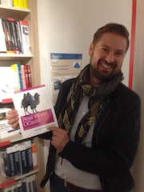 Our blog roll maintains the ongoing stream of activity from the OCaml Labs crew, but there were some particular highlights throughout 2014.
It wasn’t all just blogging though, and Jeremy Yallop and Leo White in particular participated in some epic OCaml bug threads about new features, and explanations about OCaml semantics on the mailing list.
Amir Chaudhry also continued to curate and develop the content on the ocaml.org website with our external collaborators Ashish Agarwal, Christophe Troestler and Phillippe Wang. Notably, it is now the recommended site for OCaml (with the INRIA site being infrequently updated), and also hosts the ACM OCaml Workshop pages. One addition that highlighted the userbase of OCaml in the teaching community came from building a map of all of the universities where the language is taught, and this was Yan Shvartzshnaider’s first contribution to the site.
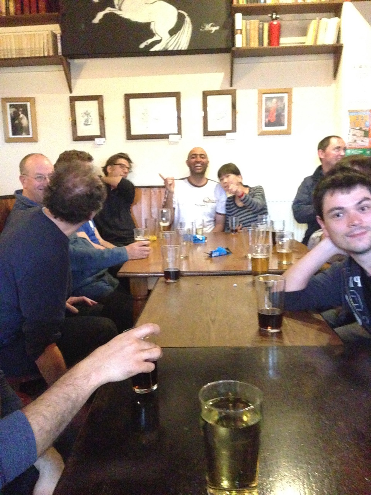 Finally, a really important part of any community is hanging out with each other to chat over ideas in a friendly environment. As usual, we had a very steady stream of visitors and interns throughout 2014 to facilitate this.
Frederic Bour, Benjamin Farinier and Matthieu Journault joined us as summer interns from their respective universities in France as part of their Masters programs. Frederic worked on modular implicits and gave a great talk at the OCaml Users group. Benjamin and Matthieu worked on Irmin data structures and complexity (and merge-queues and merge-ropes), and Benjamin had his paper on “Mergeable Persistent Data Structures” accepted to JFLA 2015, while Matthieu’s work on efficient algorithms for synchronising Irmin DAGs is being integrated into the upstream source code.
Daniel Buenzli repeated his visit from 2013 and spent a productive summer with us, commenting on almost every project we’re working on. In his own words (edited for brevity):
I started by implementing and releasing Uucp, a library to provide efficient access to a selection of the properties of the latest Unicode Character database (UCD). […] As a side effect of the previous point I took time to write an absolute minimal introduction to Unicode. […] Since I was in this Unicode business I took the opportunity to propose a 31 loc patch to the standard library for a type to represent Unicode scalar values (an Unicode character to be imprecise) to improve interoperability.
The usual yearly update to OpenGL was announced at the Siggraph conference. This prompted me to update the ctypes-based tgls library for supporting the latest entry point of OpenGL 4.5 and OpenGL ES 3.1. Since the bindings are automatically generated from the OpenGL XML registry the work is not too involved but there’s always the odd function signature you don’t/can’t handle automatically yet.
Spend quite a bit (too much) time on useri, a small multi-platform abstraction for setting up a drawing surface and gather user input (not usury) as React events. Useri started this winter as a layer on top of SDL to implement a CT scan app and it felt like this could be the basis for adding interactivity and animation to Vg/Vz visualizations – js viz libraries simply rely on the support provided by the browser or SVG support but Vg/Vz strives for backend independence and clear separations of concern (up to which limit remains an open question). Unfortunately I couldn’t bring it to a release and got a little bit lost in browser compatibility issues and trying to reconcile what browser and SDL give us in terms of functionality and way of operating, so that a maximum of client code can be shared among the supported platforms. But despite this non-release it still managed to be useful in some way, see the next point.
Helped Jeremy and Leo to implement the rendering and interaction for their ICFP tutorial 2048 js_of_ocaml implementation. This featured the use of Gg, Vg, Useri and React and I was quite pleased with the result (despite some performance problems in certain browsers, but hey composable rendering and animation without a single assignement in client code). It’s nice to see that all these pains at trying to design good APIs eventually fit together […]
A couple of visitors joined us from sunny Morocco, where Hannes Mehnert and David Kaloper had gone to work on a clean-slate TLS stack. They found the MirageOS effort online, and got in touch about visiting. After a very fun summer of hacking, their stack is now the standard TLS option in MirageOS and resulted in the Bitcoin Pinata challenge being issued! Hannes and David have since moved to Cambridge to work on this stack full-time in 2015, but the internships served as a great way for everyone to get to know each other.
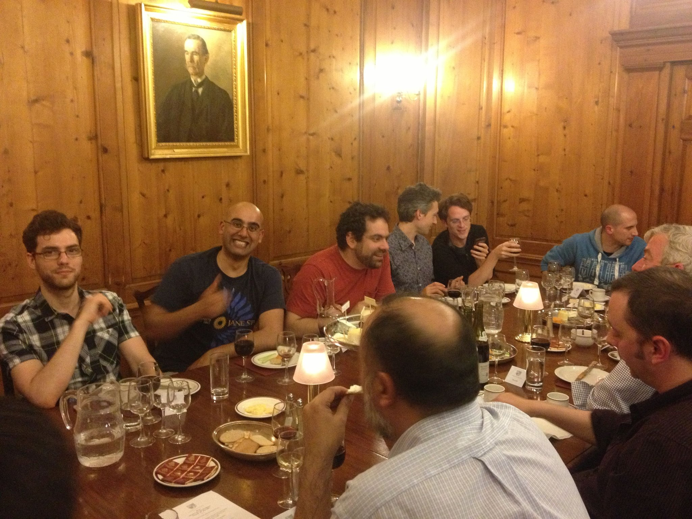> We also had the pleasure of visits from several of our usually remote collaborators. Christophe Troestler, Yaron Minsky, Jeremie Diminio and Andy Ray all visited for the annual OCaml Labs review meeting in Christ’s College. There were also many academic talks from foreign visitors in our SRG seminar series, ranging from Uday Khedkar from IIT to Oleg Kiselyov deliver multiple talks on staging and optimisation (as well as making a celebrity appearance at the compiler hacking session, and Yaron Minsky delivering an Emacs-driven departmental seminar on his experiences with Incremental computation.
The OCaml Labs are of course based in the Cambridge Computer Laboratory, where our day job is to do academic research. Balancing the demands of open source coding, community efforts and top-tier research has be a tricky one, but an effort that has been worthwhile.
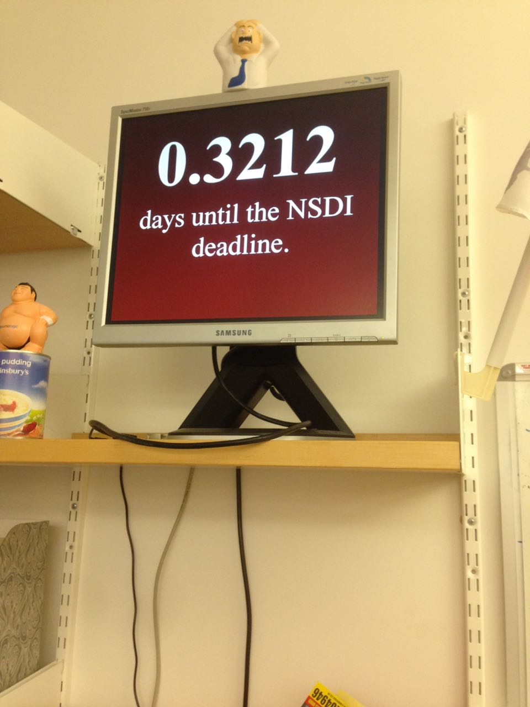 Our research efforts are broadly unchanged from 2013 (it takes time to craft good ideas!), and this will not be an exhaustive recap. Instead, we’ll summarise them here and point to our papers that describe the work in detail.
The MirageOS really found its own feet in 2014, with a summer 2.0 release and an extensive end-of-year recap. The most notable thing has been how well the MirageOS research work has melded with the core OCaml Labs efforts, since much of it has been constructing good quality OCaml libraries to plug holes in the ecosystem. It also served to make us use OPAM on a day-to-day basis for our own work, thus creating an effective feedback loop between open-source and research.
In the Trilogy2 and UCN EU projects, we built out MirageOS features such as the Jitsu toolstack for the “just-in-time” summoning of unikernels in response to DNS requests. This paper will be presented next month at UlSENIX NSDI. It also drove the development of the ARMv7 port, an architecture for which OCaml has an excellent native code generator, as well as more experimental forays into BitCoin incentive schemes for distributed systems.
The Irmin Git-like branchable store created by Thomas Gazagnaire matured, with Dave Scott prototyping a complex port of the XenStore database to Irmin, thus letting us show off debugging systems with Git. We had a paper accepted on some early datastructures accepted at JFLA, and Thomas Leonard is building the JavaScript backend for running in-browser, while Yan Schvartzshnaider is experimenting with graph processing over the DAG representation for privacy-friendly queries. KC is investigating how to adapt his PLDI 2015 paper on Quelea into using Irmin as a backend as well.
The Higher kinded polymorphism library written by Jeremy Yallop and Leo White was published in FLOPS 2014, forming a basis for building more complex use-cases that need the flexibility of higher kinded types without requiring functorising code.
Our long standing research into personal online privacy led to our next system target that uses unikernels: the Databox paper outlines the architecture, and was covered in the Guardian newspaper. Jon Crowcroft led the establishment of the Cambridge wing of the Microsoft Cloud Computing Research Center to consider the legal aspect of things, and so we have made forays outside of technology into considering the implications of region-specific clouds as well.
Some of the most exciting work done in the group as part of the REMS and NaaS projects came towards the end of 2014 and start of 2015, with multiple submissions going into top conferences. Unfortunately, due to most of them being double blind reviewed, we cannot link to the papers yet. Keep an eye on the blog and published paper set, or ask us directly about what’s been going on!
As spring breaks and the weather (almost) becomes bearable again, we’re setting our work priorities for the remainder of the year.
Tooling Cohesion: The entire core team is focussed on fusing together the individual tools that have been created last year into a cohesive OCaml Platform release that covers the lifecycle of documentation, testing and build. This is being managed by Amir Chaudhry. OPAM remains at the heart of this strategy, and Louis Gesbert and Thomas Gazagnaire have settled on the OPAM 1.3 roadmap (summary).
Multicore: KC Sivaramakrishnan has joined the core OCaml Labs fulltime to drive the multicore work into a publically testable form. Leo White recently departed after many productive years in Cambridge to head into a career in industry (but still remains very much involved with OCaml development!).
Language Evolution: Jeremy Yallop continues to drive our efforts on staged programming, modular implicits, and a macro system for OCaml, all of which are key features that make building complex, reliable systems more tractable than ever.
I’d like to thank the entire team and wider community for a wonderfully enjoyable 2014 and start of 2015, and am very thankful to the funding and support from Jane Street, Citrix, British Telecom, RCUK, EPSRC, DARPA and the EU FP7 that made it all possible. As always, please feel free to contact any of us directly with questions, or reach out to me with any queries, concerns or bars of chocolate as encouragement.
2013 review This time last year in 2012, I had just announced the formation of a new group called OCaml Labs in the Cambridge Computer Lab that would combine research and community work towards the practical application of functional programming. An incredible year has absolutely flown by, and I’ve put together this post to summarise what’s gone on, and point to our future directions for 2014.
The theme of our group was not to be pure research, but rather a hybrid group that would take on some of the load of day-to-day OCaml maintenance from INRIA, as well as help grow the wider OCaml community. To this end, all of our projects have been highly collaborative, often involving colleagues from OCamlPro, INRIA, Jane Street, Lexifi and Citrix.
This post covers progress in tooling, the compiler and language, community efforts, research projects and concludes with our priorities for 2014.
At the start of 2013, OCaml was in the interesting position of being a mature decades-old language with a small, loyal community of industrial users who built mission critical applications using it. We had the opportunity to sit down with many of them at the OCaml Consortium meeting and prioritise where we started work. The answer came back clearly: while the compiler itself is legendary for its stability, the tooling around it (such as package management) was a pressing problem.
Our solution to this tooling was centered around the OPAM package manager that OCamlPro released into beta just at the end of 2012, and had its first stable release in March 2013. OPAM differs from most system package managers by emphasising a flexible distributed workflow that uses version constraints to ensure incompatible libraries aren’t mixed up (important for the statically-typed OCaml that is very careful about dependencies). Working closely with OCamlPro we developed a git-based workflow to make it possible for users (both individual or industrial) to easily build up their own package repositories and redistribute OCaml code, and started curating the package repository.
The results have been satisfying: we started with an initial set of around 100 packages in OPAM (mostly imported by the 4 developers), and ended 2013 with 587 unique packages and 2000 individual versions, with contributions from 160 individuals. We now have a curated central package repository for anyone to submit their OCaml code, several third-party remotes are maintained (e.g. the Xen Project and Ocsigen). We also regularly receive releases of the Core libraries from Jane Street, and updates from sources as varied as Facebook, Coherent PDF, to the Frenetic SDN research.

Number of unique contributors to the central OPAM package repository
Total number of unique packages (including multiple versions of the same package)
Total packages with multiple versions coalesced so you can see new package growth
A notable contribution from OCamlPro during this time was to clarify the licensing on the package repository to be the liberal CC0, and also to pass ownership to the OCaml organization on GitHub, where it’s now jointly maintained by OCaml Labs, OCamlPro and anyone else that wishes to contribute.
It’s been quite interesting just watching all the varied code fly into the repository, but stability quickly became a concern as the new packages piled up. OCaml compiles to native code on not just x86, but also PowerPC, Sparc and ARM CPUs. We kicked off various efforts into automated testing: firstly David Sheets built the OCamlot daemon that would schedule builds across all the exotic hardware. Later in the year, the Travis service launched support for testing from GitHub pull requests, and this became the front line of automated checking for all incoming new packages to OPAM.
A major headache with automated testing is usually setting up the right build environment with external library dependencies, and so we added Docker support to make it easier to bulk-build packages for local developer use, with the results of builds available publically for anyone to help triage. Unfortunately fixing the bugs themselves is still a very manual process, so more volunteers are always welcome to help out!
We’re going to be really seeing the rewards from all this effort as OCaml 4.02 development proceeds, since we can now adopt a data-driven approach to changing language features instead of guessing how much third-party code will break. If your code is in OPAM, then it’ll be tested as new features such as module aliases, injectivity and extension points show up.
The venerable OCamlDoc tool has done an admirable job for the last decade, but is increasingly showing its age due to a lack of support for cross-referencing across packages. We started working on this problem in the summer when Vincent Botbol visited us on an internship, expecting it to be a quick job to come up with something as good as Haskell’s excellent Haddock online documentation.
Instead, we ran into the “module wall”: since OCaml makes it so easy to parameterise code over other modules, it makes it hard to generate static documentation without outputting hundreds of megabytes of HTML every time. After some hard work from Vincent and Leo, we’ve got a working prototype that lets you simply run opam install opam-doc && opam doc core async to generate package documentation. You can see the results for Mirage online, but expect to see this integrated into the main OCaml site for all OPAM packages as we work through polishing up the user interface.
The other behind-the-scenes effort for OPAM has been to keep the core command-line tool simple and stable, and to have it install OCaml libraries that can be interfaced with by other tools to do domain-specific tasks. Thomas Gazagnaire, Louis Gesbert and David Sheets have been steadily hacking away at this and we now have opamfu to run operations over all packages, and an easy-to-template opam2web that generates the live opam.ocaml.org website.
This makes OPAM easier to deploy within other organizations that want to integrate it into their workflow. For example, the software section of the OCaml Labs website is regularly generated from a search of all OPAM packages tagged ocamllabs. We also used it to rewrite the entire OPAM repository in one epic diff to add external library dependencies via a command-line shim.
All of this effort is geared towards making it easier to maintain reusable local OPAM installations. After several requests from big universities to help out their teaching needs, we’re putting together all the support needed to easily redistribute OPAM packages via an “OPAM-in-a-Box” command that uses Docker containers to let you clone and do lightweight modifications of OCaml installations.
This will also be useful for anyone who’d like to run tutorials or teach OCaml, without having to rely on flaky network connectivity at conference venues: a problem we’ve suffered from too!
Starting to work on a real compiler can often be a daunting prospect, and so one initiative we started this year is to host regular compiler hacking sessions where people could find a curated list of features to work on, with the regular developers at hand to help out when people get stuck, and free beer and pizza to oil the coding wheels. This has worked out well, with around 20 people showing up on average for the three we held, and several patches submitted upstream to OCaml. Gabriel Scherer and Damien Doligez have been helping this effort by tagging junior jobs in the OCaml Mantis bug tracker as they are filed.
Leo White started the year fresh out of completing his PhD with Alan Mycroft, and before he realized what he’d gotten himself into was working with Alain Frisch on the future of syntax transformations in OCaml. We started off our first wg-camlp4 working group on the new lists.ocaml.org host, and a spirited discussion started that went on and on for several months. It ended with a very satisfying design for a simpler extension points mechanism which Leo presented at the OCaml 2013 workshop at ICFP, and is now merged into OCaml 4.02-trunk.
Not all of the working groups were quite as successful in coming to a conclusion as the Camlp4 one. On the Platform mailing list, Gabriel Scherer started a discussion on the design for namespaces in OCaml. The resulting discussion was useful in separating multiple concerns that were intermingled in the initial proposal, and Leo wrote a comprehensive blog post on a proposed namespace design.
After further discussion at ICFP 2013 with Jacques Garrigue later in the year, it turns out adding support for module aliases would solve much of the cost associated with compiling large libraries such as Core, with no backwards compatibility issues. This solution has now been integrated into OCaml 4.02.0dev and is being tested with Core.
Jeremy Yallop joined us in April, and he and Leo also leapt into the core compiler and started triaging issues on the OCaml bug tracker. This seems unglamorous in the beginning, but there rapidly turned out to be many fascinating threads that shed light on OCaml’s design and implementation through seemingly harmless bugs. Here is a pick of some interesting threads through the year that we’ve been involved with:
opam switch 4.00.1+open-types.This is just a sample of some of the issues solved in Mantis; if you want to learn more about OCaml, it’s well worth browsing through it to learn from over a decade of interesting discussions from all the developers.
While OCamlPro was working on their reentrant OCaml runtime, we took a different tack by adding thread-local storage to the runtime instead, courtesy of Stephen Dolan. This is an important choice to make at the outset of adding multicore, so both approaches are warranted. The preemptive runtime adds a lot of code churn (due to adding a context parameter to most function calls) and takes up a register, whereas the thread-local storage approach we tried doesn’t permit callbacks to different threads.
Much of this work isn’t interesting on its own, but forms the basis for a fully multicore runtime (with associated programming model) in 2014. Stay tuned!
[graphics/ocl13rev/c.png]{.floater} One other complaint from the Consortium members was quite surprising: the difficulty of using the OCaml foreign function interface safely to interface with C code. Jeremy Yallop began working on the ctypes library that had the goal of eliminating the need to write any C code at all for the vast majority of foreign bindings.
Instead, Ctypes lets you describe any C function call as an OCaml value, and provides various linkage options to invoke that function into C. The first option he implemented was a dlopen interface, which immediately brought us the same level of functionality as the Python or Haskell Ctypes equivalents. This early code was in itself startlingly useful and more pleasant to use than the raw FFI, and various folk (such as David Sheets’ libsodium cryptography bindings) started adopting it.
At this point, I happened to be struggling to write the Foreign Function Interface chapter of Real World OCaml without blowing through our page budget with a comprehensive explanation of the existing system. I decided to take a risk and write about Ctypes instead, since it let new users to the language have a far more productive experience to get started. Xavier Leroy pointed out some shortcomings of the library in his technical book review, most notably with the lack of an interface with C macros. The design of Ctypes fully supports alternate linking mechanisms than just dlopen though, and Jeremy has added automatic C stub generation support as well. This means that if you use Ctypes to build an OCaml binding in 2014, you can choose several mechanisms for the same source code to link to the external system. Jeremy even demonstrated a forking model at OCaml 2013 that protects the OCaml runtime from the C binding via process separation.
The effort is paying off: Daniel Bünzli ported SDL2 using ctypes, and gave us extensive feedback about any missing corner cases, and the resulting bindings don’t require any C code to be written. Jonathan Protzenko even used it to implement an OCaml controller for the Adafruit Raspberry Pi RGB LCD!
Our community efforts were largely online, but we also hosted visitors over the year and regular face-to-face tutorials.
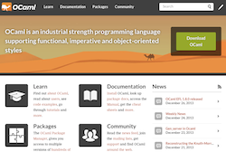 While the rest of the crew were hacking on OPAM and OCaml, Amir Chaudhry and Philippe Wang teamed up with Ashish Agarwal and Christophe Troestler to redesign and relaunch the OCaml website. Historically, OCaml’s homepage has been the caml.inria.fr domain, and the ocaml.org effort was begun by Christophe and Ashish some years ago to modernize the web presence.
The webpages were already rather large with complex scripting (for example, the 99 Problems page runs the OCaml code to autogenerate the output). Philippe developed a template DSL that made it easier to unify a lot of the templates around the website, and also a Markdown parser that we could link to as a library from the rest of the infrastructure without shelling out to Pandoc.
Meanwhile, Amir designed a series of interactive wireframe sketches and [gathered feedback]((http://amirchaudhry.com/ocamlorg-request-for-feedback/) on it from the community. A local design agency in Cambridge helped with visual look and feel, and finally at the end of the summer we began the migration to the new website, followed by a triumphant switchover in November to the design you see today.
The domain isn’t just limited to the website itself. Leo and I set up a SVN-to-Git mirror of the OCaml compiler Subversion repository on the GitHub OCaml organization, which is proving popular with developers. There is an ongoing effort to simplify the core compiler tree by splitting out some of the larger components, and so camlp4 is also now hosted on that organization, along with OASIS. We also administer several subdomains of ocaml.org, such as the mailing lists and the OPAM repository, and other services such as the OCaml Forge are currently migrating over. This was made significantly easier thanks to sponsorship from Rackspace Cloud (users of XenServer which is written in OCaml). They saw our struggles with managing physical machines and gave us developer accounts, and all of the ocaml.org infrastructure is now hosted on Rackspace. We’re very grateful to their ongoing help!
If you’d like to contribute to infrastructure help (for example, I’m experimenting with a GitLab mirror), then please join the infrastructure@lists.ocaml.org mailing list and share your thoughts. The website team also need help with adding content and international translations, so head over to the website issue tracker and start proposing improvements you’d like to see.
The floodgates requesting features opened up after the launch of the new look and feel. Pretty much everyone wanted deeper OPAM integration into the main website, for features such as:
Many of these features were part of the original wireframes but we’re being careful to take a long-term view of how they should be created and maintained. Rather than building all of this as a huge bloated opam2web extension, David Sheets (our resident relucant-to-admit-it web expert) has designed an overlay directory scheme that permits the overlaying of different metadata onto the website. This lets one particular feature (such as blog post aggregation) be handled separately from the others via Atom aggregators.
 A big effort that took up most of the year for me was finishing and publishing an O’Reilly book called Real World OCaml with Yaron Minsky and Jason Hickey. Yaron describes how it all started in his blog post, but I learnt a lot from developing a book using the open commenting scheme that we developed just for this.
A big effort that took up most of the year for me was finishing and publishing an O’Reilly book called Real World OCaml with Yaron Minsky and Jason Hickey. Yaron describes how it all started in his blog post, but I learnt a lot from developing a book using the open commenting scheme that we developed just for this.
In particular, the book ended up shining a bright light into dark language corners that we might otherwise not have explored in OCaml Labs. Two chapters of the book that I wasn’t satisfied with were the objects and classes chapters, largely since neither Yaron nor Jason nor I had ever really used their full power in our own code. Luckily, Leo White decided to pick up the baton and champion these oft-maligned (but very powerful) features of OCaml, and the result is the clearest explanation of them that I’ve read yet. Meanwhile, Jeremy Yallop helped out with extensive review of the Foreign Function Interface chapter that used his ctypes library. Finally, Jeremie Diminio at Jane Street worked hard on adding several features to his utop toplevel that made it compelling enough to become our default recommendation for newcomers.
All in all, we ended up closing over 2000 comments in the process of writing the book, and I’m very proud of the result (freely available online, but do buy a copy if you can to support it). Still, there’s more I’d like to do in 2014 to improve the ease of using OCaml further. In particular, I removed a chapter on packaging and build systems since I wasn’t happy with its quality, and both Thomas Gazagnaire and I intend to spend time in 2014 on improving this part of the ecosystem.
We had a lively presence at ICFP 2013 this year, with the third iteration of the OCaml 2013 held there, and Stephen Dolan presenting a paper in the main conference. I liveblogged OCaml 2013 and CUFP 2013 as they happened, and all the talks we gave are linked from the program. The most exciting part of the conference for a lot of us were the two talks by Facebook on their use of OCaml: first for program analysis using Pfff and then to migrate their massive PHP codebase using an OCaml compiler. I also had the opportunity to participate in a panel at the Haskell Workshop on whether Haskell is too big to fail yet; lots of interesting perspectives on scaling another formerly academic language into the real world.
Yaron Minsky and I have been giving tutorials on OCaml at ICFP for several years, but the release of Real World OCaml has made it significantly easier to give tutorials without the sort of labor intensity that it took in previous years (one memorable ICFP 2011 tutorial that we did took almost 2 hours to get everyone installed with OCaml. In ICFP 2013, it took us 15 minutes or so to get everyone started). Still, giving tutorials at ICFP is very much preaching to the choir, and so we’ve started speaking at more general-purpose events.
Julien Verlaguet and Yoann Padioleau show off Pfff code visualisation at Facebook

Marius Eriksen and Yaron Minsky start a Scala vs OCaml rap battle at the ICFP industrial fair. Maybe.
>A successful FPDays tutorial in Cambridge, with all attendees getting a free copy of Real World OCaml
Our first local effort was FPDays in Cambridge, where Jeremy Yallop and Amir Chaudhry ran the tutorial with help from Phillipe Wang, Leo White and David Sheets. The OCaml session there ended up being the biggest one in the entire two days, and Amir wrote up their experiences. One interesting change from our ICFP tutorial is that Jeremy used js_of_ocaml to teach OCaml via JavaScript by building a fun Monty Hall game.
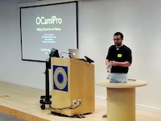 Since OCaml Labs is a normal group within the Cambridge Computer Lab, we often host academic visitors and interns who pass through. This year was certainly diverse, and we welcomed a range of colleagues:
We were also visited several times by Wojciech Meyer from ARM, who was an OCaml developer who maintained (among other things) the ocamlbuild system and worked on DragonKit (an extensible LLVM-like compiler written in OCaml). Wojciech very sadly passed away on November 18th, and we all fondly remember his enthusiastic and intelligent contributions to our small Cambridge community.
We also hosted visitors to live in Cambridge and work with us over the summer. In addition to Vincent Botbol (who worked on OPAM-doc as described earlier) we had the pleasure of having Daniel Bünzli and Xavier Clerc work here. Here’s what they did in their own words.
Xavier Clerc took a break from his regular duties at INRIA to join us over the summer to work on OCaml-Java and adapt it to the latest JVM features. This is an incredibly important project to bridge OCaml with the huge Java community, and here’s his report:
After a four-month visit to the OCaml Labs dedicated to the OCaml-Java project, the time has come for an appraisal! The undertaken work can be split into two areas: improvements to code generation, and interaction between the OCaml & Java languages. Regarding code generation, several classical optimizations have been added to the compiler, for example loop unrolling, more aggressive unboxing, better handling of globals, or partial evaluation (at the bytecode level). A new tool, namely ocamljar, has been introduced allowing post-compilation optimizations. The underlying idea is that some optimizations cannot always be applied (e.g. depending whether multiple threads/programs will coexist), but enabling them through command-line flags would lead to recompilation and/or multiple installations of each library according to the set of chosen optimizations. It is thus far more easier to first build an executable jar file, and then modify it according to these optimizations. Furthermore, this workflow allows the ocamljar tool to take advantage of whole-program information for some optimizations. All these improvements, combined, often lead to a gain of roughly 1/3 in terms of execution time.
Regarding language interoperability, there are actually two directions depending on whether you want to call OCaml code from Java, or want to call Java code from OCaml. For the first direction, a tool allows to generate Java source files from OCaml compiled interfaces, mapping the various constructs of the OCaml language to Java classes. It is then possible to call functions, and to manipulate instances of OCaml types in pure Java, still benefiting from the type safety provided by the OCaml language. In the other direction, an extension of the OCaml typer is provided allowing to create and manipulate Java instances directly from OCaml sources. This typer extension is indeed a thin layer upon the original OCaml typer, that is mainly responsible for encoding Java types into OCaml types. This encoding uses a number of advanced elements such as polymorphic variants, subtyping, variance annotations, phantom typing, and printf-hack, but the end-user does not have to be aware of this encoding. On the surface, the type of instances of the Java Object classes is
java'lang'Object java_instance, and instances can be created by calling Java.makeObject().While still under heavy development, a working prototype is available, and bugs can be reported. Finally, I would like to thank the OCaml Labs for providing a great working environment.
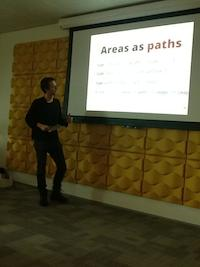 Daniel joined us from Switzerland, and spent some time at Citrix before joining us in OCaml Labs. All of his software is now on OPAM, and is seeing ever-increasing adoption from the community.
Released a first version of Vg […] I’m especially happy about that as I wanted to use and work on these ideas since at least 2008. The project is a long term project and is certainly not finished yet but this is already a huge step.
Adjusted and released a first version of Gg. While the module was already mostly written before my arrival to Cambridge, the development of Vg and Vz prompted me to make some changes to the module.
[…] released Otfm, a module to decode OpenType fonts. This is a work in progress as not every OpenType table has built-in support for decoding yet. But since it is needed by Vg’s PDF renderer I had to cut a release. It can however already be used to implement certain simple things like font kerning with Vg, this can be seen in action in the
vechobinary installed by Vg.Started to work on Vz, a module for helping to map data to Vg images. This is really unfinished and is still considered to be at a design stage. There are a few things that are however well implemented like (human) perceptually meaningful color palettes and the small folding stat module (
Vz.Stat). However it quickly became evident that I needed to have more in the box w.r.t. text rendering in Vg/Otfm. Things like d3js entirely rely on the SVG/CSS support for text which makes it easy to e.g. align things (like tick labels on such drawings). If you can’t rely on that you need ways of measuring rendered text. So I decided to suspend the work on Vz and put more energy in making a first good release of Vg. Vz still needs quite some design work, especially since it tries to be independent of Vg’s backend and from the mechanism for user input.Spent some time figuring out a new “opam-friendly” release workflow in pkgopkg. One of my problem is that by designing in the small for programming in the large — what a slogan — the number of packages I’m publishing is growing (12 and still counting). This means that I need to scale horizontally maintenance-wise unhelped by the sad state of build systems for OCaml. I need tools that make the release process flawless, painless and up to my quality standards. This lead me to enhance and consolidate my old scattered distribution scripts in that repo, killing my dependencies on Oasis and ocamlfind along the way. (edited for brevity, see here)
Daniel also left his bicycle here for future visitors to use, and the “Bünzli-bike” is available for our next visitor! (Louis Gesbert even donated lights, giving it a semblance of safety).
Most of our regular funding bodies such as EPSRC or EU FP7 provide funding, but leave all the intellectual input to the academics. A compelling aspect of OCaml Labs has been how involved our industrial colleagues have been with the day-to-day problems that we solve. Both Jane Street and Citrix have senior staff regularly visiting our group and working alongside us as industrial fellows in the Computer Lab.
Mark Shinwell from Jane Street Europe has been working on improving the state of native debugging in OCaml, by adding extended DWARF debugging information to the compiler output. Mark is also a useful source of feedback about the forthcoming design of multicore, since he has daily insight into a huge production codebase at Jane Street (and can tell us about it without us requiring access!).
Dave Scott is the principal architect of XenServer at Citrix in Cambridge. This year has been transformative for that project, since Citrix open-sourced XenServer to GitHub and fully adopted OPAM into their workflow. Dave is the author of numerous libraries that have all been released to OPAM, and his colleagues Jon Ludlam and Euan Harris are also regular visitors who have also been contributors to the OPAM and Mirage ecosystems.
The other 100% of our time at the Labs is spent on research projects. When we started the group, I wanted to set up a feedback loop between local people using OCaml to build systems, with the folk developing OCaml itself. This has worked out particularly well with a couple of big research projects in the Lab.
Mirage is a library operating system written in OCaml that compiles source code into specialised Xen microkernels, developed at the Cambridge Computer Lab, Citrix and the Horizon Digital Economy institute at Nottingham. This year saw several years of effort culminate in the first release of Mirage 1.0 as a self-hosting entity. While Mirage started off as a quick experiment into building specialised virtual appliances, it rapidly became useful to make into a real system for use in bigger research projects. You can learn more about Mirage here, or read the Communications of the ACM article that Dave Scott and I wrote to close out the year.
This project is where the OCaml Labs “feedback loop” has been strongest. A typical Mirage application consists of around 50 libraries that are all installed via OPAM. These range from device drivers to protocol libraries for HTTP or DNS, to filesystems such as FAT32. Coordinating regular releases of all of these would be near impossible without using OPAM, and has also forced us to use our own tools daily, helping to sort out bugs more quickly. You can see the full list of libraries on the OCaml Labs software page.
Mirage is also starting to share code with big projects such as XenServer now, and we have been working with Citrix engineers to help them to move to the Core library that Jane Street has released (and that is covered in Real World OCaml). Moving production codebases this large can take years, but OCaml Labs is turning out to be a good place to start unifying some of the bigger users of OCaml into one place. We’re also now an official Xen Project incubator project, which helps us to validate functional programming to other Linux Foundation efforts.
The release of Mirage 1.0 has put us on the road to simplifying embedded systems programming. The move to the centralized cloud has led to regular well-publicised privacy and security threats to the way we handle our digital infrastructure, and so Jon Crowcroft, Richard Mortier and I are leading an effort to build an alternative privacy-preserving infrastructure using embedded devices as part of the User Centric Networking project, in collaboration with a host of companies led by Technicolor Paris. This work also plays on the strong points of OCaml: it already has a fast ARM backend, and Mirage can easily be ported to the new Xen/ARM target as hardware becomes available.
One of the most difficult aspects of programming on the “wide area” Internet are dealing with the lack of a distributed identity service that’s fully secure. We published our thoughts on this at the USENIX Free and Open Communications on the Internet workhsop, and David Sheets is working towards a full implementation using Mirage. If you’re interested in following this effort, Amir Chaudhry is blogging at the Nymote project website, where we’ll talk about the components as they are released.
At the other extreme from embedded programming is datacenter networking, and we started the Network-as-a-Service research project with Imperial College and Nottingham. With the rapid rise of Software Defined Networking this year, we are investigating how application-specific customisation of network resources can build fast, better, cheaper infrasructure. OCaml is in a good position here: several other groups have built OpenFlow controllers in OCaml (most notably, the Frenetic Project), and Mirage is specifically designed to assemble such bespoke infrastructure.
Another aspect we’ve been considering is how to solve the problem of optimal connectivity across nodes. TCP is increasingly considered harmful in high-through, high-density clusters, and George Parisis led the design of Trevi, which is a fountain-coding based alternative for storage networking. Meanwhile, Thomas Gazagnaire (who joined OCaml Labs in November), has been working on a branch-consistent data store called Irminsule which supports scalable data sharing and reconciliation using Mirage. Both of these systems will see implementations based on the research done this year.
Jeremy Yallop and Leo White have been developing an approach that makes it possible to write programs with higher-kinded polymorphism (such as monadic functions that are polymorphic in the monad they use) without using functors. It’s early days yet, but there’s a library available on OPAM that implements the approach, and a draft paper that outlines the design.
This year has been a wild ride to get us up to speed, but we now have a solid sense of what to work on for 2014. We’ve decided on a high-level set of priorities led by the senior members of the group:
These are guidelines to choosing where to spend our time, but not excluding other work or day-to-day bugfixing. Our focus on collaboration with Jane Street, Citrix, Lexifi, OCamlPro and our existing colleagues will continue, as well as warmly welcoming new community members that wish to work with us on any of the projects, either via internships, studentships or good old-fashioned open source hacking.
I appreciate the whole team’s feedback in editing this long post into shape, the amazing professorial support from Jon Crowcroft, Ian Leslie and Alan Mycroft throughout the year, and of course the funding and support from Jane Street, Citrix, RCUK, EPSRC, DARPA and the EU FP7 that made all this possible. Roll on 2014, and please do with me with any queries!
{kind=link}